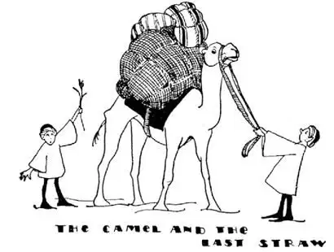

48
The Ship of the Desert
沙漠之舟

THERE are a few camels in Istanbul, but camels don’t belong in Europe. They have to be carried across the Bosporus from Asia, for a camel is said to be the only animal that cannot swim and cannot learn to swim. Most animals, like dogs, swim naturally; they don’t have to learn. The camel may not be able to swim, but he can cross deserts, which no other animal can do as well.
The camel is an animal of the desert, and when we see camels we know there must be deserts somewhere near. The camel loves heat and dryness, the sun and sand. Men and most animals, when it is hot, like the cool shade when they rest, but a camel when he rests lies down in the hot sun. He is often called “the ship of the desert,” for he is the only “boat” that can carry passengers across the sea of sands. His feet are made like cushions so that they do not sink into the sand. A camel has several pouches inside of his body in which to store up water, as in tanks, for in crossing desert lands he may have to go days at a time without a drink, so he fills up these tanks inside of him.
The camel in Asia has one hump and is called a Dromedary. There are other camels that have two humps. The hump is not a broken back, as it looks—it is made of fat, and when the camel can get no outside food, the fat in his hump helps to feed him as the food in his stomach feeds him.
The camel “follows the leader,” almost as in the game, for wherever the leader goes he goes—so when a number of camels are used to carry loads long distances they are tied head to tail in a line, like a train of cars hitched together, often with a donkey at the head of the train like a locomotive to lead them. The donkey has sense, but a camel has little sense; that’s why the donkey is made the leader. Such a train of camels is called a caravan. The camel looks very superior—as if no one were as good as he—but he is really a stupid animal with a very small brain. He has, however, an even temper—always mean, ugly, and nasty. He grunts as he walks slowly along on his stilt-like legs. He is trained to kneel and a load is then put on his back, and he will carry great loads with his driver on top of that. If too big a load is put on his back, when kneeling, the camel will not get up at all; but once he gets up he never gives up, no matter how heavy the load. You can then pile anything on him until it crushes him to the ground. When he has all the load he can carry, one straw more may be enough to break his back. So when you give some one too much work to do, people say, “It’s the last straw that breaks the camel’s back.”

“It’s the last straw that breaks the camel’s back”
“那是压垮骆驼的最后一根稻草”
The camel carries loads for his master, but the camel does more than that. The mother camel gives him milk, and sometimes young camels are used for food. The camel’s hair is woven to make blankets and clothes and tents. In our country the best paint brushes are made of camel’s hair.
【中文阅读】
伊斯坦布尔有一些骆驼，但欧洲不产骆驼。骆驼只能通过博斯普鲁斯海峡从亚洲用船运来。据说骆驼是唯一不会游泳也学不会游泳的动物。大多数动物，比如狗，天生就会游泳，它们不需要学。骆驼虽不会游泳，但它能穿过沙漠，这是其他任何动物都做不到的。
骆驼是沙漠里的一种动物。如果看见骆驼，我们就知道附近某个地方一定有沙漠。骆驼喜欢高温和干燥，阳光和沙子。天气炎热时，人类和大多数动物喜欢在荫凉处休息，但是，骆驼却躺在炎热的阳光下休息。骆驼常被称作“沙漠之舟”，因为它是唯一能载着乘客穿越“沙海”的“船”。骆驼的脚长得像垫子一样，所以不会陷进沙里。骆驼的体内长有几只可以储水的袋囊，就像水箱一样，因为穿越沙漠时骆驼也许会一连几天都没有水喝，所以它就得将体内的水箱充满。
亚洲骆驼有一个驼峰，叫做“单峰骆驼”，也有长着两个驼峰的骆驼。驼峰看起来像是断了的脊背，其实不然，驼峰里全是脂肪。当骆驼找不到食物吃的时候，驼峰里的脂肪就可以向身体输送营养，就像胃里的食物向身体输送营养一样。
骆驼具有模仿“领头人”的习性，差不多就像我们在“学样”游戏里做的那样——领头人去哪儿，骆驼就去哪儿——所以当一群骆驼长距离运送货物时，它们就会被头尾相连地系在一起接成一条线，像多节车厢挂在一起的一列火车。在骆驼队的最前面通常有一头驴子来充当领队，就像火车有车头一样。驴子感觉很灵敏而骆驼感觉非常迟钝，这就是为什么用驴来领队的原因。这样的驼队被称为商队。骆驼看上去非常高傲——好像谁也比不上它——实际上骆驼的大脑很小，是一种很笨的动物。然而，它性情平和——总是那样小气、丑陋、邋遢。骆驼一边迈动那高跷般的腿慢慢行走，一边嘴里发出咕哝声。骆驼经过训练会跪在地上，让人把货物放在它的背上。骆驼能运载很多货物，且驾驭者就坐在货物的上面。如果一次装载太多的货物，跪在地上的骆驼就根本站不起来，但是一旦站了起来，无论货物有多重，它都决不会倒下。这时你可以往它背上堆放任何东西，除非把它压倒在地。当骆驼负载了它所能承载的最大重量时，再加一根稻草也许都会压垮它。所以，当你让别人做太多的工作时，人们会说， “那是压垮骆驼的最后一根稻草。”
骆驼除了为主人运载货物，还有其他用途。母骆驼能产奶供主人喝，有时小骆驼可供食用，骆驼毛可以织成毯子、衣服和帐篷。我们国家最好的画笔就是用骆驼毛制成的。